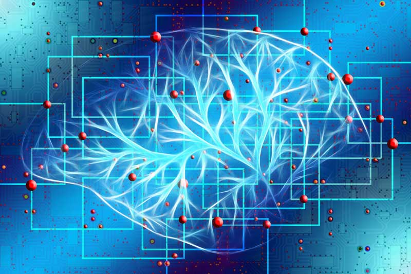
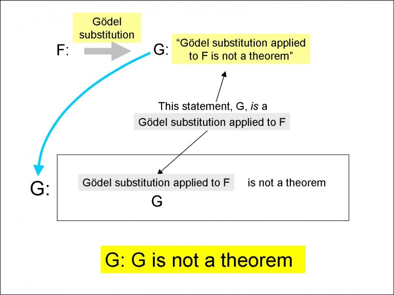
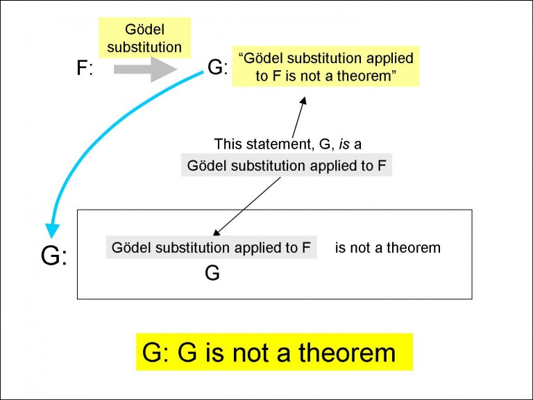

Quantum Applications in Artificial Intelligence
Jared Rackley

Artificial intelligence has become a popular buzzword in popular culture
in the past few years. Unfortunately,both mainstream and science-fiction media tend to choose
dramatization over scientific fact, and have been a big factor in spreading misinformation about
the capabilities of AI. Because of misinformation in movies, television, books, and other media,
some people believe that AI is so powerful, it will take over the world. All they can see is
that we have the possibility of a future run by AI, particularly with the improvements in
computing equipment performance.
Quantum computing has been a shining goal of computing for years, and a number of companies have
introduced prototypes that, while not being widely adopted as of yet, show the major advances in
speed and power that quantum computing can bring. Quantum computing is still in its infancy, but
it has tremendous possibilities for its future.
So will AIs, backed up by the power of quantum computing, grow so strong that they will one day
dominate the world? The truth is that when they are combined, AI and quantum computing can
provide great possibilities in a number of different industries and applied uses. These two
fields of computer science are very powerful and can both stand on their own. However, even
greater possibilities arise when they are combined. Whether this combination can run the world
has yet to be seen. Nonetheless, don’t look for AI and/or quantum computers to become the next
Big Brother. Below, I'll discuss the capabilities of these two revolutionary fields right now,
and discuss the possibilities for the future of quantum computing and AI combined together.
What AI can and cannot do
Although popular media has portrayed artificial intelligence as a powerful tool that dominates
the future, there are limits to its capabilities. Neural networks are meant to simulate human
brain activity, where each node is a neuron. However, artificial intelligence has not reached
the point where it can continuously learn and adapt, nor use common sense (1). The artificial
intelligence that we know today comes from taking a dataset with predetermined inputs and then
training the model to determine the best possible output or behavior.
Most artificial intelligence used in organizations and companies today is very specific. It can
tell you who's most likely to order a product based on the item and their profile, what TV shows
and movies you probably want to watch (Netflix does this), interpret and give results for things
you ask for (voice assistants like Alexa and Siri), and many other things! This application of
artificial intelligence won’t work for any problem, as it's only programmed to work for a
specific topic and criteria.
The other type of AI that is much harder to develop, meaning it cannot be used, because so far,
it hasn't been realized, is a general (or bottom-up) AI. The reason why this type of AI is so
difficult is because of the constraints of a machine that humans don’t have. A famous scientist
named Gödel came up with a formula saying that if we have a formal arithmetic system F, it is
impossible to construct a computer which will output all theorems of F. He showed this by giving
the example of the Gödel Sentence G which is in F, that states “I am not a theorem of F.” If
this theorem is true, then it leads to a contradiction in F. However, if it is not true, then F
is incomplete, because it cannot be proved. (4)

This example proved that machines have constraints that humans don’t. Gödel was able to see the
flaw with the arithmetic system F, and humans can account for this, while no machine could
account for this, because it itself exists within these constraints.
This isn’t to say that general AI cannot be achieved. In fact, another scientist named
Schmidhuber developed the Gödel machine, which uses a recursive strategy to self-improve (4).
Still, we have not been able to develop an AI system that is capable of self-developing, other
than very specific situations. Branislav Holländer, who wrote an article on this topic, stated
this:
The problem with [an AI that develops without human intervention], however, is that we actually
did not succeed in constructing any self-improving AI. Today’s machine learning algorithms are
capable of modifying themselves to a certain degree, e.g. one-shot learning algorithms, but it
is not nearly at the level of human development. Genetic algorithms may be able to self-improve
by mechanisms similar to biological life, but they usually require a fair amount of fine-tuning
by humans to work correctly. A self-improving AI on the other hand, would only require the
intelligence of a newborn at first and could develop itself from that point on to any level of
intelligence required.
Read more about Why We
May Never Develop General AI
However, this does not mean that AI cannot do fantastic things. In 2020, DeepMind’s AI solved
the protein-folding problem, which had been baffling Scientists for 50 years (2). Other examples
include virtual assistants, which many people had thought were impossible, but now exist in most
smartphones, and automated vehicles, which for the drive better than most humans in general
situations. AI still continues to develop, and it continues to have technological breakthroughs!
What is Quantum Computing
The idea of quantum computing was first proposed by Richard Feynman in 1982. He wanted to apply
quantum mechanics to the growing field of computing. His ideas were put into a research paper
that introduced the idea of a quantum turing machine. After that, more scientists began to come
up with quantum solutions to problems in computing. Solutions to well-known computer science
problems went from being exponential in time to only taking polynomial time. The major reason
for this is because of quantum parallelism (3). Qubits are quantum bits, meaning at any point in
time, they can be a zero, one, or a superposition of both zero and one. This superposition has a
drastic effect on the amount of processing, because it means that when we are processing bits,
we can process all the bits at the same time.
Because of this, when we put quantum bits into a quantum register (a register that holds quantum
bits) with a capacity of n bits, we can calculate all possible values of an algorithm with
length n with astounding time differences. The possibilities are endless!
Watch this video to learn more about quantum computing in general:
Quantum Applications in Artificial Intelligence
From reading above, you should be able to see why these concepts are both so powerful on their
own. So what happens when the two are combined? Well, right now the possibilities are mostly
conjecture, because this field hasn’t really been explored yet. However, big companies recognize
its potential, and Google even unveiled a new campus earlier this year dedicated to Quantum AI.
(5)
One of the areas where quantum AI would be most useful is with searching. Many AI applications
have to search for data. In fact, the field of information retrieval is solely based on
retrieving information from sources and then presenting the most relevant information. However,
gathering the resources is no small task. It can take minutes, hours, or even days! Because of
this, quantum search has been a popular topic. There is already an algorithm made for this too,
called Grover’s algorithm (3).
In classical computing, if you were searching for an item in a list, you would have to check
about n/2 items for most lists using binary search, which is an O(log n) with n iterations for
the algorithm. However, using the properties of superposition and phase interference, it would
take only about half the amount of iterations, making the quantum version only have n the amount
of iterations as the classical version! (6) This can make a huge difference when you combine it
with AI. Say you want to search every single consumer site on the internet to find the best
trend in prices for items on websites like amazon. First you’d need to pull in the data, but
with all that data in an index (structure that holds data), you’d need to search through it to
find the best possible trends. A classical algorithm would take too long to run for this to be a
viable option. However, quantum algorithms could make this possible! That data would have a lot
of fascinating implications on market research as well. This is just speculation though, as
there has yet to be any publicly known successful implementations of Grover’s algorithm.
Read more about Grover’s
algorithm
Another subset of Artificial Intelligence is called deep learning, which is a revolutionary
field that requires far less human intervention, is more powerful, and much more complex than
traditional machine learning. One of the most popular concepts in deep learning is neural
networks. Neural networks are a popular structure in deep learning that was named for its
similarity to the brain. In neural networks, each node is a neuron, and inputs go through
several layers of neurons to reach an output.
So where does quantum computing come in? Well, neural networks are notoriously difficult because
of all the layers each neuron has to go through before reaching the output layer. Adding more
neurons to the neural network scales it exponentially, because of all the extra layers that each
neuron added has to go through. However, researchers have already come up with possible methods
to make quantum neural networks. The most significant advantage to this is that the intermediate
states in each layer are greatly reduced, with qubits scaling with the network width instead of
exponentially increasing (7). So where does quantum computing come in? Well, neural networks are
notoriously difficult because of all the layers each neuron has to go through before reaching
the output layer. Adding more neurons to the neural network scales it exponentially, because of
all the extra layers that each neuron added has to go through. However, researchers have already
come up with possible methods to make quantum neural networks. The most significant advantage to
this is that the intermediate states in each layer are greatly reduced, with qubits scaling with
the network width instead of exponentially increasing (7).
Quantum computing is still in its early stages, with much more research needing to be done to
get sustainable quantum systems. Quantum systems right now need to be kept frigid in order to
retain quantum properties such as qubits. This makes algorithms mostly impossible to test,
because of the very limited availability of any quantum systems. Still, Artificial intelligence
and quantum computing are emerging rapidly in technology today, and together they can
potentially even provide solutions to some of our longest known problems, like energy
sustainability or incurable diseases like cancer. While many of the applications are still
unrealized because of the aforementioned constraints, with both fields growing, the
possibilities will increase exponentially!
References:
-
https://www.forbes.com/sites/robtoews/2021/06/01/what-artificial-intelligence-still-cant-do/?sh=66c1a3e866f6
-
https://deepmind.com/blog/article/alphafold-a-solution-to-a-50-year-old-grand-challenge-in-biology
-
https://www.sciencedirect.com/science/article/pii/S0004370209001398
-
https://towardsdatascience.com/why-we-may-never-develop-strong-ai-e49c805480f
-
https://blog.google/technology/ai/unveiling-our-new-quantum-ai-campus/
-
https://towardsdatascience.com/grovers-search-algorithm-simplified-4d4266bae29e
-
https://www.nature.com/articles/s41467-020-14454-2#Sec7
Image Links:
https://toptenscience.com/wp-content/uploads/2019/04/artificial-intelligence.jpg
https://2s7gjr373w3x22jf92z99mgm5w-wpengine.netdna-ssl.com/wp-content/uploads/2021/11/Quantum_shutterstock_metamorworks.jpg
Artificial intelligence has become a popular buzzword in popular culture in the past few years. Unfortunately,both mainstream and science-fiction media tend to choose dramatization over scientific fact, and have been a big factor in spreading misinformation about the capabilities of AI. Because of misinformation in movies, television, books, and other media, some people believe that AI is so powerful, it will take over the world. All they can see is that we have the possibility of a future run by AI, particularly with the improvements in computing equipment performance.
Quantum computing has been a shining goal of computing for years, and a number of companies have introduced prototypes that, while not being widely adopted as of yet, show the major advances in speed and power that quantum computing can bring. Quantum computing is still in its infancy, but it has tremendous possibilities for its future.
So will AIs, backed up by the power of quantum computing, grow so strong that they will one day dominate the world? The truth is that when they are combined, AI and quantum computing can provide great possibilities in a number of different industries and applied uses. These two fields of computer science are very powerful and can both stand on their own. However, even greater possibilities arise when they are combined. Whether this combination can run the world has yet to be seen. Nonetheless, don’t look for AI and/or quantum computers to become the next Big Brother. Below, I'll discuss the capabilities of these two revolutionary fields right now, and discuss the possibilities for the future of quantum computing and AI combined together.
What AI can and cannot do
Although popular media has portrayed artificial intelligence as a powerful tool that dominates the future, there are limits to its capabilities. Neural networks are meant to simulate human brain activity, where each node is a neuron. However, artificial intelligence has not reached the point where it can continuously learn and adapt, nor use common sense (1). The artificial intelligence that we know today comes from taking a dataset with predetermined inputs and then training the model to determine the best possible output or behavior.
Most artificial intelligence used in organizations and companies today is very specific. It can tell you who's most likely to order a product based on the item and their profile, what TV shows and movies you probably want to watch (Netflix does this), interpret and give results for things you ask for (voice assistants like Alexa and Siri), and many other things! This application of artificial intelligence won’t work for any problem, as it's only programmed to work for a specific topic and criteria.
The other type of AI that is much harder to develop, meaning it cannot be used, because so far, it hasn't been realized, is a general (or bottom-up) AI. The reason why this type of AI is so difficult is because of the constraints of a machine that humans don’t have. A famous scientist named Gödel came up with a formula saying that if we have a formal arithmetic system F, it is impossible to construct a computer which will output all theorems of F. He showed this by giving the example of the Gödel Sentence G which is in F, that states “I am not a theorem of F.” If this theorem is true, then it leads to a contradiction in F. However, if it is not true, then F is incomplete, because it cannot be proved. (4)
This example proved that machines have constraints that humans don’t. Gödel was able to see the flaw with the arithmetic system F, and humans can account for this, while no machine could account for this, because it itself exists within these constraints.
This isn’t to say that general AI cannot be achieved. In fact, another scientist named Schmidhuber developed the Gödel machine, which uses a recursive strategy to self-improve (4). Still, we have not been able to develop an AI system that is capable of self-developing, other than very specific situations. Branislav Holländer, who wrote an article on this topic, stated this:
The problem with [an AI that develops without human intervention], however, is that we actually did not succeed in constructing any self-improving AI. Today’s machine learning algorithms are capable of modifying themselves to a certain degree, e.g. one-shot learning algorithms, but it is not nearly at the level of human development. Genetic algorithms may be able to self-improve by mechanisms similar to biological life, but they usually require a fair amount of fine-tuning by humans to work correctly. A self-improving AI on the other hand, would only require the intelligence of a newborn at first and could develop itself from that point on to any level of intelligence required.
Read more about Why We May Never Develop General AI
However, this does not mean that AI cannot do fantastic things. In 2020, DeepMind’s AI solved the protein-folding problem, which had been baffling Scientists for 50 years (2). Other examples include virtual assistants, which many people had thought were impossible, but now exist in most smartphones, and automated vehicles, which for the drive better than most humans in general situations. AI still continues to develop, and it continues to have technological breakthroughs!
What is Quantum Computing
The idea of quantum computing was first proposed by Richard Feynman in 1982. He wanted to apply quantum mechanics to the growing field of computing. His ideas were put into a research paper that introduced the idea of a quantum turing machine. After that, more scientists began to come up with quantum solutions to problems in computing. Solutions to well-known computer science problems went from being exponential in time to only taking polynomial time. The major reason for this is because of quantum parallelism (3). Qubits are quantum bits, meaning at any point in time, they can be a zero, one, or a superposition of both zero and one. This superposition has a drastic effect on the amount of processing, because it means that when we are processing bits, we can process all the bits at the same time.
Because of this, when we put quantum bits into a quantum register (a register that holds quantum bits) with a capacity of n bits, we can calculate all possible values of an algorithm with length n with astounding time differences. The possibilities are endless!
Watch this video to learn more about quantum computing in general:
Quantum Applications in Artificial Intelligence
From reading above, you should be able to see why these concepts are both so powerful on their own. So what happens when the two are combined? Well, right now the possibilities are mostly conjecture, because this field hasn’t really been explored yet. However, big companies recognize its potential, and Google even unveiled a new campus earlier this year dedicated to Quantum AI. (5)
One of the areas where quantum AI would be most useful is with searching. Many AI applications have to search for data. In fact, the field of information retrieval is solely based on retrieving information from sources and then presenting the most relevant information. However, gathering the resources is no small task. It can take minutes, hours, or even days! Because of this, quantum search has been a popular topic. There is already an algorithm made for this too, called Grover’s algorithm (3).
In classical computing, if you were searching for an item in a list, you would have to check about n/2 items for most lists using binary search, which is an O(log n) with n iterations for the algorithm. However, using the properties of superposition and phase interference, it would take only about half the amount of iterations, making the quantum version only have n the amount of iterations as the classical version! (6) This can make a huge difference when you combine it with AI. Say you want to search every single consumer site on the internet to find the best trend in prices for items on websites like amazon. First you’d need to pull in the data, but with all that data in an index (structure that holds data), you’d need to search through it to find the best possible trends. A classical algorithm would take too long to run for this to be a viable option. However, quantum algorithms could make this possible! That data would have a lot of fascinating implications on market research as well. This is just speculation though, as there has yet to be any publicly known successful implementations of Grover’s algorithm.
Read more about Grover’s algorithm
Another subset of Artificial Intelligence is called deep learning, which is a revolutionary field that requires far less human intervention, is more powerful, and much more complex than traditional machine learning. One of the most popular concepts in deep learning is neural networks. Neural networks are a popular structure in deep learning that was named for its similarity to the brain. In neural networks, each node is a neuron, and inputs go through several layers of neurons to reach an output.
So where does quantum computing come in? Well, neural networks are notoriously difficult because of all the layers each neuron has to go through before reaching the output layer. Adding more neurons to the neural network scales it exponentially, because of all the extra layers that each neuron added has to go through. However, researchers have already come up with possible methods to make quantum neural networks. The most significant advantage to this is that the intermediate states in each layer are greatly reduced, with qubits scaling with the network width instead of exponentially increasing (7). So where does quantum computing come in? Well, neural networks are notoriously difficult because of all the layers each neuron has to go through before reaching the output layer. Adding more neurons to the neural network scales it exponentially, because of all the extra layers that each neuron added has to go through. However, researchers have already come up with possible methods to make quantum neural networks. The most significant advantage to this is that the intermediate states in each layer are greatly reduced, with qubits scaling with the network width instead of exponentially increasing (7).
Quantum computing is still in its early stages, with much more research needing to be done to get sustainable quantum systems. Quantum systems right now need to be kept frigid in order to retain quantum properties such as qubits. This makes algorithms mostly impossible to test, because of the very limited availability of any quantum systems. Still, Artificial intelligence and quantum computing are emerging rapidly in technology today, and together they can potentially even provide solutions to some of our longest known problems, like energy sustainability or incurable diseases like cancer. While many of the applications are still unrealized because of the aforementioned constraints, with both fields growing, the possibilities will increase exponentially!
References:
-
https://www.forbes.com/sites/robtoews/2021/06/01/what-artificial-intelligence-still-cant-do/?sh=66c1a3e866f6 -
https://deepmind.com/blog/article/alphafold-a-solution-to-a-50-year-old-grand-challenge-in-biology -
https://www.sciencedirect.com/science/article/pii/S0004370209001398 -
https://towardsdatascience.com/why-we-may-never-develop-strong-ai-e49c805480f -
https://blog.google/technology/ai/unveiling-our-new-quantum-ai-campus/ -
https://towardsdatascience.com/grovers-search-algorithm-simplified-4d4266bae29e -
https://www.nature.com/articles/s41467-020-14454-2#Sec7
Image Links:
https://toptenscience.com/wp-content/uploads/2019/04/artificial-intelligence.jpg
https://2s7gjr373w3x22jf92z99mgm5w-wpengine.netdna-ssl.com/wp-content/uploads/2021/11/Quantum_shutterstock_metamorworks.jpg
{kind=link}
{kind=link}